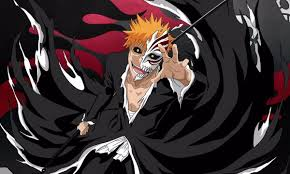

"You wanted revenge? You're just making other people as miserable as you. Revenge is just the path you took to escape your suffering"
Ichigo was born on July 15th as the son of Isshin Kurosaki and Masaki Kurosaki, 15 years before he became a Shinigami. His sisters Karin Kurosaki and Yuzu Kurosaki were born a few years later. When he was four, Ichigo joined a karate dojo, where he met and befriended Tatsuki Arisawa. Though Tatsuki beat Ichigo in every match they had, she would help Ichigo if he was being picked on by bullies and cheer him up if he was upset.
Ichigo was able to see Pluses for as long as he could remember.He could see them so clearly, as a child, he could not tell the living from the dead. This resulted in him appearing to other people to be looking at deserted places and talking to himself. This caused people to say he could see ghosts, though when Tatsuki asked him about this, he denied being able to see them.
As a teenager, Ichigo is stubborn, short-tempered, strong-willed, and impulsive. Despite claiming not to care about what other people think about him, he attempts to maintain a detached and "cool" image.He generally keeps his face set in a near-permanent scowl, with his eyebrows drawn together. His outspoken, hot-headed demeanor is a trait Ichigo himself has acknowledged, and if somebody picks a fight with him, he cannot help fighting back. He coldly refers to his teachers as "instructors". He is genuinely compassionate and empathetic towards others, promising to bring a Plus flowers and a toy plane, or soothing others when they become upset.
Accidentally attracting the attention of more Shinigami, Ichigo meets up with Ganju again. Surrounded, they decide to take Hanatarō Yamada hostage as they try to escape. Stuck with Hanatarō, they take advantage of his offer to show them a shortcut through the sewers to Rukia's cell. Upon exiting the sewers, Ichigo is confronted by Renji, who gravely injures Ichigo in their ensuing battle. After a struggle, Ichigo, becoming stronger during the fight, defeats Renji with a Getsuga Tenshō. Renji begs him to rescue Rukia. In the sewers, Ichigo is healed by Hanatarō, who discovers Ichigo's Hollow mask lessened the damage from what would have been fatal blows by Renji. After recovering, Ichigo, encountering Kenpachi, initially struggles to even cut the powerful captain. After Zangetsu helps Ichigo find his resolve, Ichigo manages to injure Kenpachi. Viewing Ichigo as his equal, Kenpachi decides to unleash his full power, prompting Ichigo and Zangetsu to work together to summon his full power. After the fight ends, with both of them incapacitated, Ichigo is rescued by Yoruichi.
